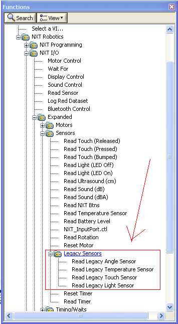
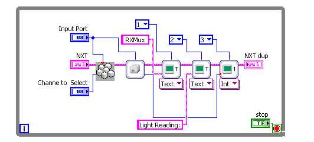

RXMux allows you to connect upto 4 RCX style sensors to NXT.
This block allows you to select a channel of the sensor.
After
selecting the channel, a sensor reading may be taken using standard NXT
block.

Inputs
Input Port
- This is where you select the Sensor
Port
your RXMux is
attached to.
Channe to Select-There are 4 channels on RXMux, connect a sensor to one
of the
channels, and select the channel here.
Sample Program

Sample located at
..\mindsesnors.com
LVHS\mindsensors.com Sample Programs\RXMux-SP\RXMux-Direct
Discuss Your Ideas>>